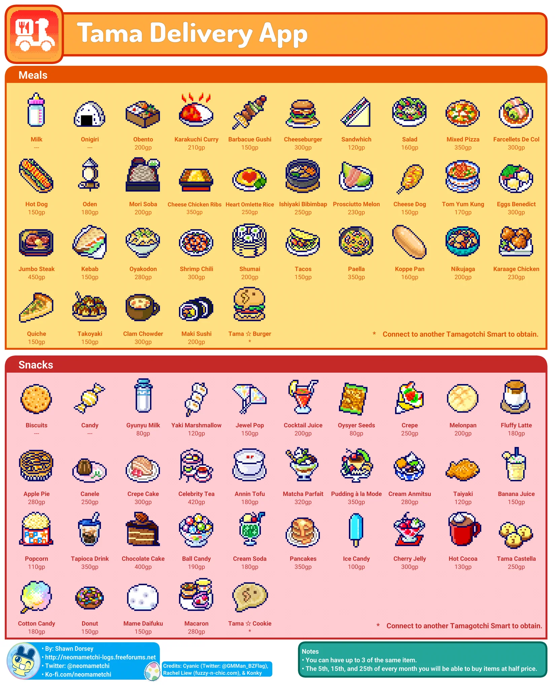
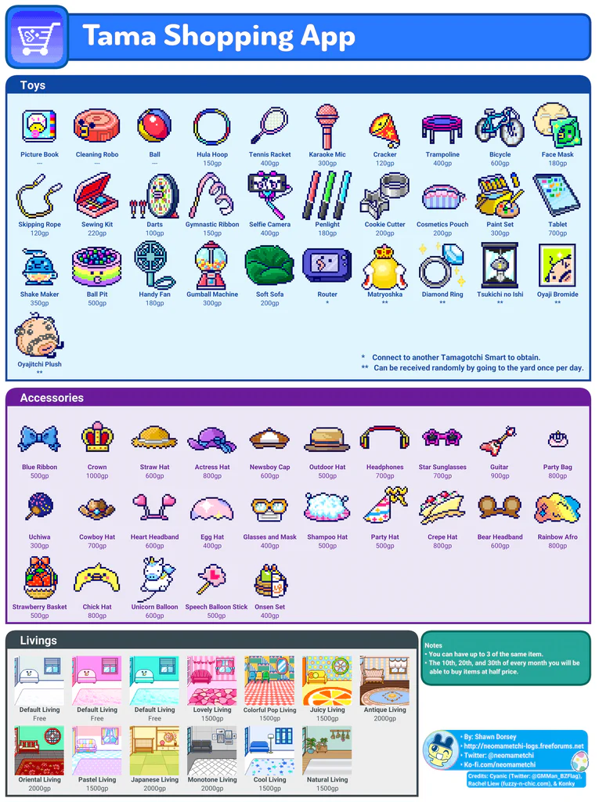
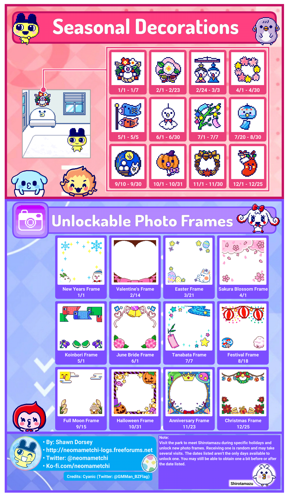
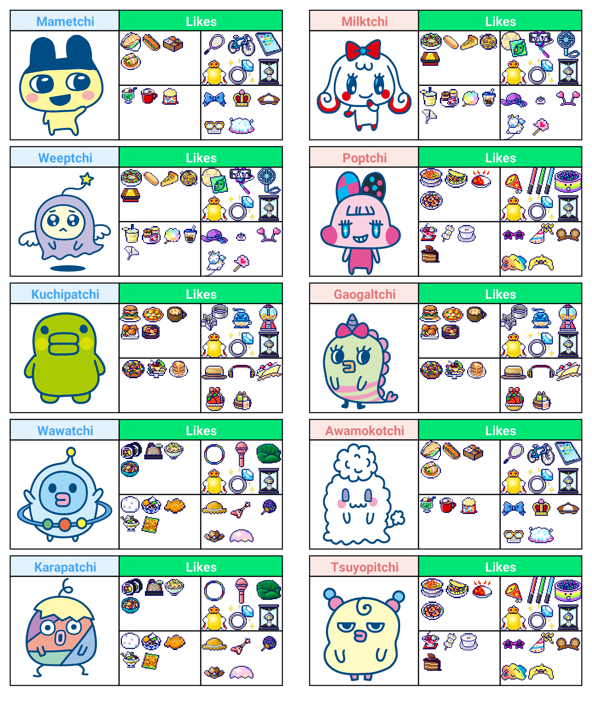

English Instruction Manual - translated by OldSchoolVPQ on tumblr
Tamagotchi Smart Menu English Translation - translated by Rachel Liew for Fuzzy N Chic
Note: This is not a full guide or manual. Rather, this serves as a quick reference for English menu translation without gameplay instructions. For in-depth guide on gameplay, please refer to the English Translated Manual above.
Unofficial Guide Book - by Neo_Mametchi. This guide book contains the following:
- Growth Chart
- All the TamaSma Cards Contents & How to Obtain Each Character
- List of Accessories, Living (Wallpaper), Food, Snacks, and Toys
- Photo Frames
How to Patch Tamagotchi Smart into English - Video by RaTamaZone
List of all the Tamagotchi characters from SmaCards
Tamagotchi Smart Delivery & Shopping App Contents
These are the contents of items you can purchase from the Tamagotchi Smart Delivery & Shopping App. Pictures taken from neomametchi


Tamagotchi Smart Seasonal Decorations, Unlockable Photo Frames, and Character Likes
Tamagotchi Smart Seasonal Decorations, Unlockable Photo Frames, and Character Likes - Credits to neomametchi


Tamagotchi Smart Printable Faceplates
FAQ's
Q: How do I turn off the Tamagotchi Smart if I don't want to play with it anymore?
A: To fully turn off the device, hold down the center button and reset button at the same time, and let the screen go dark instead of continuing to the reset page. (credits to EnterNameHere22 from Discord)
Q: What is the decoration hanging on the top left of the wall on my screen?
A: It is a seasonal decoration that will automatically change with time.
Q: According to the user manual, each SmaCard can only be connected to 3 Tamagotchi Smart devices. After connecting a SmaCard, if I reset my Tamagotchi Smart and reconnect the SmaCard again to the same Tamagotchi Smart device, will it count as new device?
A: No. Even if you reset your Tamagotchi Smart after connecting a SmaCard to it, the SmaCard will still detect the Tamagotchi Smart as the same device.
Q: What is an easy way to increase my Tamagotchi's happiness?
A: Option 1: Tap on your Tamagotchi character and select こえをかける (call), then have a standing/table fan blow directly onto your Tamagotchi Smart to "speak" to it (the device will be able to detect blowing wind as voice). Leave it like this for 5 minutes and your Tama's happiness bar will go from zero to maximum.
Option 2: Tap on your Tamagotchi character and select なでる (pet) then pet your Tamagotchi by rubbing your finger on the screen left to right continuously. Repeating this 3 times will increase your Tama's happiness bar from zero to maximum.
Tamagotchi Smart Gameplay & Review video:
How to Remove Tamagotchi Smart Faceplate video tutorial: